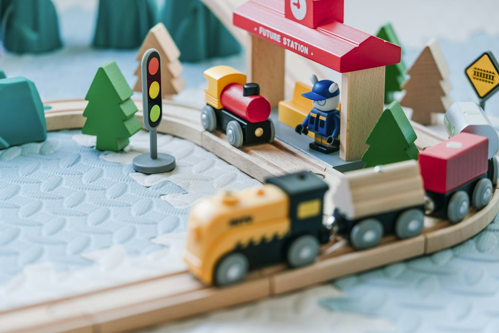
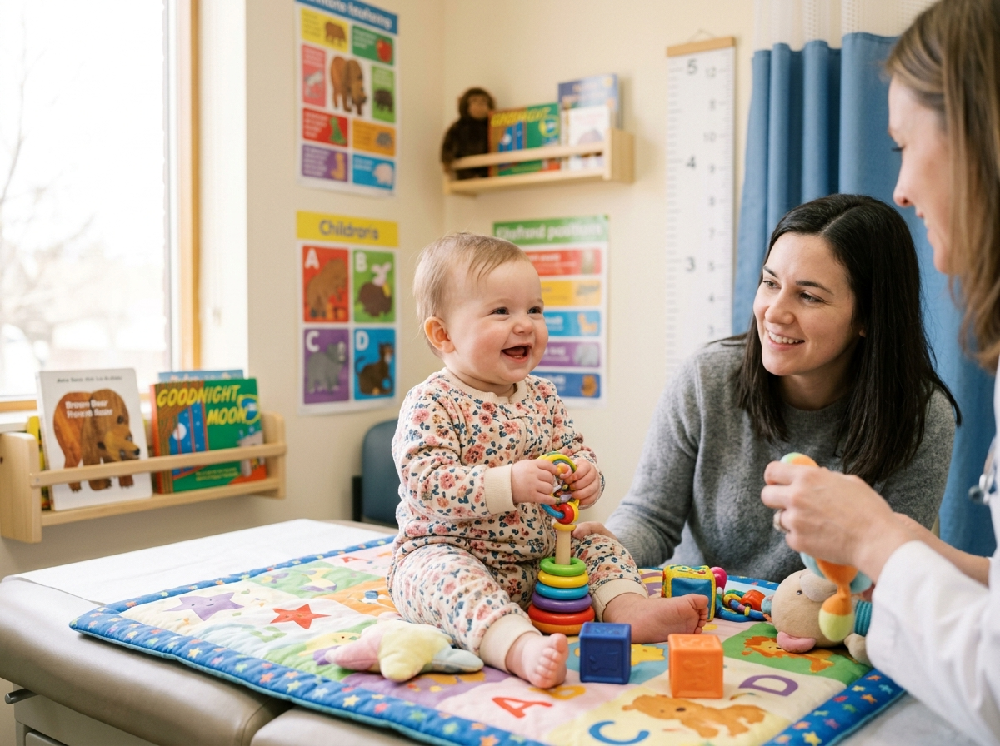
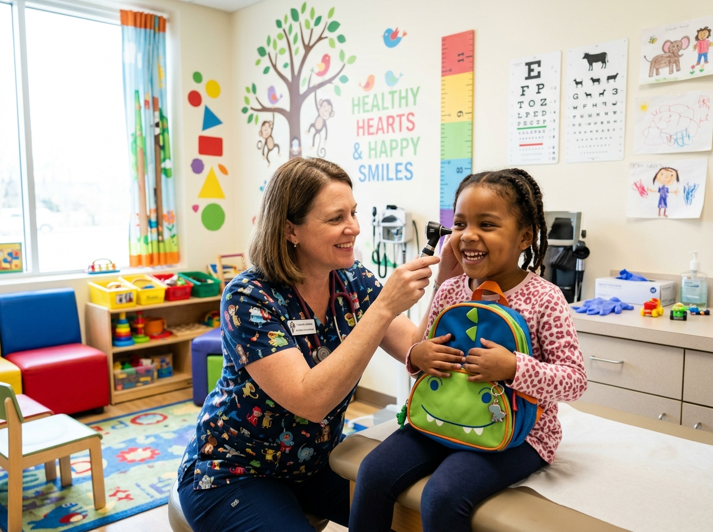

Pediatric Sanctuary & Hospital • AAP Center of Excellence
Where Healing Feels Gentle.
Pediatric Care Designed for Little Hearts.
Calming, child-centered medical care in sensory-soothing suites. From first newborn checkups to adolescent milestones, eliminating clinical fear with unhurried guidance.
Comprehensive Pediatric Wellness Center • American Academy of Pediatrics Member

🧸
Sensory-Regulated EnvironmentFiltered daylight • Ambient noise under 35dB • Zero cold tables
✨ Pediatric Design Philosophy
A Hospital Designed From A Child’s Eye Level
Traditional hospital clinics can overwhelm a child with cold stainless steel, harsh overhead fluorescents, and hurried exams. We intentionally reimagined every corner of our wellness sanctuary:
🩺
Warm Touch & Greeting First
Our pediatricians never begin with an exam tool. Stethoscopes are pre-warmed to skin temperature, and examinations begin with gentle conversation.
🎨
Interactive Distraction Play Nooks
Natural wooden toys and tactile sensory walls keep hands happily engaged, replacing nervousness with curiosity and joy.
🛡️
Parent-Lap Comfort Exam Protocols
Young infants and toddlers are examined while safely swaddled in their parent’s arms, never isolated on distant examination tables.
Comprehensive, unhurried healthcare built around your child’s emotional comfort, developmental leaps, and lifelong resilience.
🍼 0–3 MonthsPillar 01
Neonatal Care
1. Newborn & Infant Gentle Care
Dedicated hospital transition support, transcutaneous jaundice checks, and comforting infant examinations in quiet suites.
✓ Non-invasive transcutaneous jaundice check
✓ In-clinic lactation, latch & feeding guidance
✓ Colic soothing & gentle sleep rhythms
🛡️ All AgesPillar 02
Preventive Health
2. Pain-Free Child Immunizations
Shielding vital immunity through CDC and AAP scheduled vaccines using sensory vibration pads and sweet distraction drops.
✓ Buzzy vibration technology reduces sensation
✓ Parent-lap swaddling with zero restraining
✓ Instant Family Portal digital immunization log

📈 MilestonesPillar 03
Development
3. Growth & Milestone Analytics
Precision growth metrics plotted against WHO standards with motor, speech, and social milestone evaluations.
✓ Real-time height & weight percentile curves
✓ Early motor dexterity and reflex evaluations
✓ Speech, cognitive and social readiness tracking
🥗 Holistic HealthPillar 04
Nutrition & Sleep
4. Pediatric Nutrition & Wellness
Balanced weaning diets, selective eating strategies, allergy guidance, and family sleep coaching from pediatric specialists.
✓ Evidence-based weaning & allergy introduction
✓ Healthy gut microbiome & digestive comfort
✓ Positive mealtime routines and food enjoyment

🏥 Hospital Infrastructure
Clinical Facilities Built Exclusively For Children
Our facility is not a generic medical office building. It is a purpose-engineered children's wellness sanctuary featuring strict infection barriers and calming therapy spaces:
🔬
Point-Of-Care Pediatric Diagnostic Lab
10-minute rapid PCR tests for RSV, Flu, Strep, and transcutaneous jaundice screening right on site.
💨
Hospital-Grade HEPA 14 & UV-C Air Circulation
Clean air exchange every 6 minutes with separate well-child and sick-child wings to prevent cross-exposure.
🤸
Sensory Therapy & Gross Motor Studio
Padded balance courses, ball pits, and sensory swings for occupational and physical milestone mastery.
Honest stories from mothers and fathers who found compassionate guidance and peace of mind at First Steps.
★★★★★
“When my 3-week-old had high jaundice, other clinics felt rushed and cold. First Steps brought us into a quiet, warm suite with zero needles using their light scanner. Dr. Carter stayed with us until every question was answered.”
Sarah & Baby Oliver
Patients since birth
★★★★★
“My 4-year-old son had intense needle anxiety. Dr. Reed’s buzzy vibration protocol and bubble toys turned vaccination day into a game. Liam actually left smiling wearing a bravery medal. Unbelievable difference!”
Marcus & Diana (Parents of Liam)
Annual Pediatric Care
Gentle Healthcare Beginnings
Give Your Child The Gentlest Healthcare Journey.
Welcoming new infant and pediatric patients this week. Book an unhurried milestone appointment in our sensory-friendly suites today.